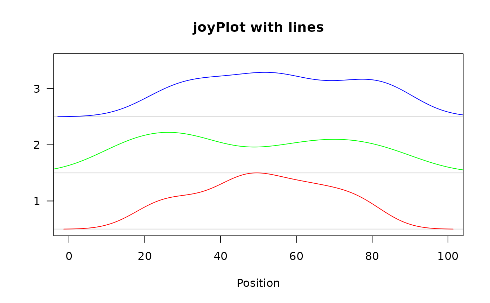
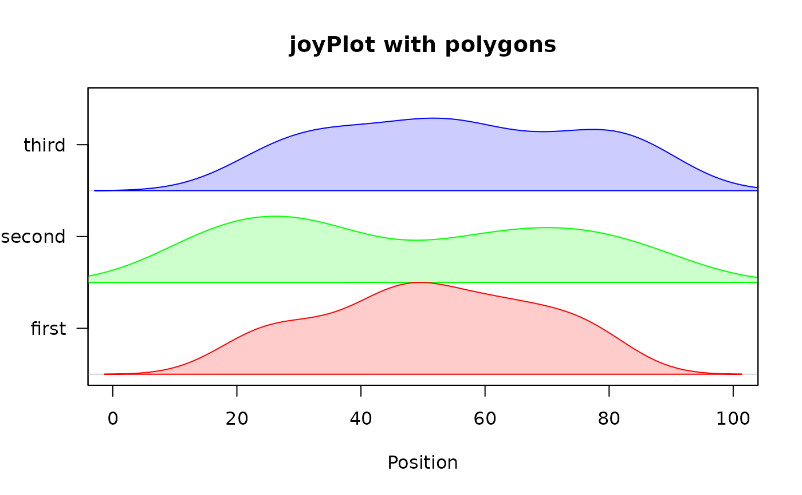

Display a series of density curves.
joyPlot.RdjoyPlot displays a matrix of density curves or other two component lists whose names are x and y. The labels for each line/polygon are displayed on the left axis of the plot. The labels default to the names of the components of x if these are present.
Arguments
- x
A list of density curves or other objects with x and y values.
- mar
Margins for the plot.
- newrange
Passed to rescale to scale the values to fit the bands on the plot. See Details.
- border
The border colors for the polygons.
- fill
Optional fill colors for the polygons.
- main
Text for the title for the plot.
- xlab,ylab
The x and y axis labels.
- xlim
Optional limit for the x axis as density returns values outside the range of the values in x.
- line_labels
Labels for the lines/polygons dieplayed.
- xat
Optional custom x tick positions.
- xaxlab
Optional custom x tick labels.
Details
The density curves or other x/y lists will be scaled so that the largest will fit into the one user unit band allocated for each curve by default. If the second value of newrange is changed, the heights of the curves will change proportionately. See the third exampls.
Examples
x1<-c(sample(20:50,20),sample(40:80,30))
x2<-c(sample(10:40,30),sample(50:90,30))
x3<-sample(20:90,50)
xdens1<-density(x1)
xdens2<-density(x2)
xdens3<-density(x3)
joyPlot(list(xdens1,xdens2,xdens3),main="joyPlot with lines",
xlab="Position",xlim=c(0,100))

xlist<-list(first=xdens1,second=xdens2,third=xdens3)
joyPlot(xlist,main="joyPlot with polygons",xlab="Position",
fill=c("#ffcccc","#ccffcc","#ccccff"),xlim=c(0,100))

joyPlot(xlist,main="joyPlot with overlapping polygons",
fill=c("#ffcccc","#ccffcc","#ccccff"),xlim=c(0,100),
newrange=c(0,1.5),xlab="Position")